OFFTONIC THEORY
Chapter 4: Intervals and Scale Degrees
The Diatonic Scale
Scales are... difficult to explain. We'll spend much more time on scales and modes in later chapters, but we have to start somewhere, right?
What is a scale?
A scale is a bunch of pitches in order (ascending or descending). You don't have to play those pitches, but that's what the scale is. For example, this is a C major scale, ascending:
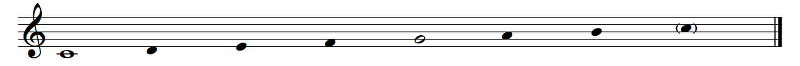Example 4.1
What does "C major" mean? What's with the whole note? How do you play the filled-in noteheads with no stems?
Rhythm doesn't matter here; I'm just showing you the notes. C major means that the scale is based on C, so I made that C into a whole note just to make it stand out. This basis note is called the tonic. The G is also very important; that note is called the dominant. I made it a non-filed-in notehead. The upper C is just a repetition of the lower C, so I put it in parentheses.
"C major" means that the tonic is C and the mode is major. There are many other modes, but the most important ones are major and minor (we'll talk about minor later). The mode is basically the flavor of the scale. This is a little hard to explain, but it will make sense in a little bit.
If you're astute, you may have noticed that these notes are all... white keys on the keyboard!
Where did the note names go?
You do not need them anymore. You're a big <child of your gender> now. I left the dot on Middle C because it's not clear from looking at the keyboard which note is Middle C, but by now you should be able to tell which note is which on the keyboard without the note names.
Anyway, the C major scale is an octave of the white keys starting on C.
And if I start on D instead, it's D major?
No, actually. We'll see why soon enough! I would tell you what it is, except that... it's complicated. If you know your music theory, you know the answer: it's the D dorian scale. If you really know your music theory, you know that there's still some missing information: it could be the hypomixolydian scale! We'll save that discussion for when we get to modes.
Hypomixolydian. You're making that up.
Am I?
That's actually a good place to start. The early history of Western music, loosely speaking, is these so-called Gregorian modes (check the link just above). People used these notes for their church singing (so they're also called church modes), and the modes were named based on which note was the final — the resting place of the music — and what the range was. So, if your music went from D to D with a final on D (D E F G A B C D), that was called the dorian mode (Mode 1 in the Gregorian system), but if it used the same notes with the music ending on G instead of D, it was called the hypomixolydian mode (Mode 8 in their system). Some notes might have been sung higher or lower to make sounds work better. In the dorian mode, for example the B was often lowered a bit. If you look at the image at that link, you can see that the lowest note in any mode was the A below the staff (A3, but they weren't so strict on pitch back then) in the hypodorian (Mode 2), and the highest note was the G above the staff (G5) in the mixolydian (Mode 7). If we label these notes starting on A, we have A B C D E F G H I K L M N O. Remember when we talked about this back in Chapter 1? They eventually realized that the note they called H was really just an A but an octave higher, and the other letters fell out of use.
{kind=link}
Eventually we settled on the so-called major scale using those notes, which was not one of the 8 Gregorian Modes, and that starts on C. But those notes, A B C D E F G and their like... Together, those notes have a name...
...the diatonic scale.
What? Is it the diatonic scale or the C major scale?
The C major scale is an example of a diatonic scale. The white keys from D to C, E to D, F to E, G to F, A to G or B to A are also diatonic scales. In fact, any scale that follows the same pattern as the white keys on the keyboard is a diatonic scale, like, for example, D major: D E F# G A B C#.
So let's talk about the properties of the diatonic scale, shall we?
Naming Intervals
For this, it's best that you keep your keyboard open in another window, because we'll be referring to it a lot.
An interval is the distance between two notes. Intervals are named by counting the notes on the diatonic scale (actually, letter names) from the starting note to the ending note. So, for example, C to E form a third: C, D, E, three notes. Third.
This... is kind of stupid, though, isn't it? There are only two steps from C to E: C to D, and D to E. Shouldn't it be a second, rather than a third?
Yes. But you're just going to have to deal with it, because this is the naming convention we've been saddled with. It's horribly illogical, but it's what it is. Blame history for not coming up with something better that stuck.
Diatonic Intervals
Let's look at the seconds in the diatonic scale:
Example 4.2
You see how there are two sizes? From C to D, you have to skip a black key, but from B to C you don't. If you use the Offtonic Keyboard to play the diatonic scale, you'll notice that B and C sound a lot closer together than C and D do. C to D, therefore, is a bigger second, while B to C is a smaller second.
But music theory treatises used to be written in Latin, not in English, so we use the Latin terms: major means "bigger" and minor means "smaller", so, in a linguistic jumble, the bigger second is called a major second and the smaller second is called a minor second.
Does this have to do with the major scale?
No. Yes. Kinda. It's complicated. We'll get to it soon.
To make things a bit more complicated, a major second is also called a whole step or a whole tone (or even just a tone), while a minor second, being half the size of a major second, is also called a half step or a semitone. Don't confuse a whole tone with a whole note. A whole note is a note that's four quarter notes long; a whole step is an interval between two notes! Within a diatonic scale, a second inside the scale is also called a diatonic step. So, if you're in C major (the white notes), C to D is a diatonic step, as is E to F, but G to G# is not. We'll talk about those in a bit.
The major seconds are C to D, D to E, F to G, G to A, and A to B. The minor seconds are E to F and B to C. You will definitely want to remember this, but the easiest way to go about it is to imagine the keyboard in your head and look if there's a black key between the two notes. So if you can't remember whether F to G is smaller (minor) or bigger (major), visualize that keyboard, notice in your memory how there's a black key between the F and the G (the F# or Gb), and conclude that it must be major.
Now look at the sevenths:
Example 4.3
Why are we going out of order?
Let me explain. From C to D, we have just the two notes, C, D, so it's a major second up. But what if we go from D to C? That's just a major second down, right? Well, not if we go to the C above. In that case, we have D, E, F, G, A, B, C, seven notes, so it's a seventh. The seventh is the inversion of the second.
Inversion? Like, upside down?
In music there are two totally different things known as inversion. One of them is when you take the lowest note of something and move it up an octave so it's above the next lowest note. So, if you have something like C4, D4, if you invert that, you have D4, C5. Note that a second plus a seventh is an octave.
Right, because 2 + 7 = 8. ...Waaaait a minute! 2 + 7 = 9! What is this?
It's stupid, but it's what it is, OK?
Anyway, there are two sizes of sevenths too. C to B is a bigger seventh (a major seventh) and D to C is a smaller seventh (a minor seventh). Notice that it's just the reverse of the seconds: C to B is a big seventh, but B to C is a small second. Of course! Since they add up to an octave, if one part is bigger then the other part must be smaller, right?
The major sevenths are C to B and F to E. The minor sevenths are D to C, E to D, G to F, A to G, and B to A. This is also very important to remember, and the easiest way to do that is to think of the inverse. Is F to E a major or a minor seventh? Well, E to F is a minor second, so F to E must be a major seventh.
Now the thirds:
Example 4.4
Again, they come in bigger (major) and smaller (minor) sizes. If you notice, the interval from C to E is two whole steps (C to D, D to E), while from D to F it's a whole step (D to E) and a half step (E to F). The bigger kind is the major third, and the smaller kind is the minor third.
To answer your question from before, this does have to do with major and minor scales. The major scale has a major third from the tonic. So, for example, in C major, C is the tonic, so the scale contains the note a major third up, E. In A minor, A is the tonic, so the scale contains the note a minor third up, C. There's a lot more to major and minor scales than just what size the interval from the tonic to the third note is, but this is at least where the name comes from!
The major thirds are C to E, F to A, and G to B. The minor thirds are D to F, E to G, A to C, and B to D. This is incredibly foundational to Western music theory, so you very much need to know this. Visualize the keyboard, hear the notes in your head, do whatever you need, but you need to know this.
And the sixths:
Example 4.5
Sixths are inversions of thirds. There's not much more to say about them. Again, the major sixth is the bigger one and the minor sixth is the smaller one. If the third is bigger, its inverse must be smaller, and vice-versa.
The major sixths are C to A, D to B, F to D, and G to E. The minor sixths are E to C, A to F, and B to G. The easiest way to remember this is to go up a fifth (we'll talk about them in a minute) and see if you have to go up a whole step or a half step to get to the sixth. Actually, you may prefer inverting the sixth and checking the third that you get. Generally it's less important to recognize a size of sixth than it is for other intervals, so it's not a huge deal.
You know what is a huge deal, though? Fourths:
Example 4.6
And fifths:
Example 4.7
If you actually listen to the interval (play it on the Offtonic Keyboard, or just on your own intruments), you'll notice something... important. In the case of the fourths, all of the fourths in the diatonic scale are the same size except one. If you play any fourth, you'll notice that it has a particular kind of sound. If you play that fourth, on the other hand, you get a very different kind of sound, a much harsher one. Notes that play well with each other are said to be consonant, while notes that sound harsh with each other are said to be dissonant. One is not better than the other. Consonant things don't necessarily sound good; dissonant things don't necessarily sound bad.
We consider that bigger fourth to be kind of special. So, we don't have bigger fourths and smaller fourths; we just have... fourths. Just one size. Except for that special one, which is bigger than the normal fourth. So, that special fourth is called an augmented fourth, and the other fourths are unmodified, so they're perfect fourths. "Perfect" here just means that they're normal, unmodified fourths.
The perfect fourths are C to F, D to G, E to A, G to C, A to D, and B to E. The augmented fourth is F to B. You're going to want to memorize this. You're going to want to memorize this very hard.
The augmented fourth has a special name. See how F to B is made up of the whole tone from F to G, the whole tone from G to A, and the whole tone from A to B? There are three whole tones. Therefore, we call this the tritone. The tritone is incredibly special. It used to be called the devil's interval, diabolus in musica, mostly because fourths sound nice and consonant except for this one. (Actually, we'll see that fourths aren't really all that consonant and tritones aren't really all that dissonant... but this will have to wait quite a while!)
The tritone is special for another reason: if you count the white keys and black keys in the tritone, you get 6: F to F#, F# to G, G to G#, G# to A, A to A#, A# to B. There are 12 total notes in an octave, so a tritone is half of an octave!
When we look at the fifths, we see a very similar story: they're all consonant (this time for real) except one, which is smaller than the others. C to G is consonant, but B to F is not. We similarly call the normal, unmodified fifth the perfect fifth, and since the ugly-sounding fifth — the wolf fifth — is smaller, we call it a diminished fifth.
The perfect fifths are C to G, D to A, E to B, F to C, G to D, and A to E. The diminished fifth is B to F. This is foundational in Western music theory, so you will really want to know this off the top of your head. The fifth is the single most important interval between different pitch classes, and it will come up again and again and again. You could argue that the entire world of Western music theory revolves around the perfect fifth.
Notice that when you invert a perfect fourth, you get a perfect fifth. When you invert the F-B augmented fourth, you get the B-F diminished fifth.
Hm. You said earlier that an augmented fourth is exactly half of an octave. So when you invert it, shouldn't you get the other half of the octave? Shouldn't the inversion of an augmented fourth be... an augmented fourth?
Clever question! Remember that we name intervals by counting letter names, so F to B is a fourth: F, G, A, B. B to F is a fifth: B, C, D, E, F. But you were right on the money when it comes to half an octave: a diminished fifth is also exactly half of an octave! In fact, the augmented fourth and the diminished fifth have the same size! Isn't that kind of amazing?
So is a diminished fifth also a tritone?
Technically, no. The tritone is specifically the augmented fourth. But, in practice, nobody really makes a distinction; the diminished fifth is a tritone too.
What's the difference?
It's just how you count the interval. If you go up three tones from B, you get B, C#, D#, E#. If you go up a semitone, two tones, and another semitone from B, you get B, C, D, E, F. B to F is a diminished fifth, while B to E# is a tritone. Yeah, they're the same key on the keyboard. But...
But?
Here's a hint of worlds to come: in some musical systems, the augmented fourth and diminished fifth actually have different sizes. With 12 equally-spaced notes per octave, a tritone is exactly half the octave. But what if we had 19 equally-spaced notes per octave instead? We'll look at that eventually... really eventually. For now, let's make sure we do our bookkeeping correctly and call B to F a diminished fifth instead of an augmented fourth, but the name "tritone" applies to both.
There are two basic intervals we haven't talked about yet. That's because they're boring. The first is the unison, which is the interval between a note and the same note, so, for example, E to E in the same octave. This is called a perfect unison, or a perfect prime, perfect because it's unmodified. There's nothing to show in a diagram so I won't bother. Unison just means that they're the same note; if multiple people play in unison, they're all playing the same notes. Prime is just "first", in comparison to "second", "third", etc. for the other intervals. The diatonic scale contains no unisons that are not perfect.
The other interval is the octave:
Example 4.8
There's really just one kind of octave in the diatonic scale, so all of these octaves are perfect octaves. The octave is important because, for some reason that I don't quite understand, we perceive two notes an octave apart as somehow being very similar. A G3 and a G4 are both G's; they're the same note, whatever that means. When we sing with each other, we naturally do so in octaves, with men singing an octave lower than women, children singing an octave higher than adults, etc. (In some cultures, like Yemenite Jews, they actually naturally sing in perfect fifths, which sounds really weird to my Western ears, but it's normal to them!) We say that notes that are separated by octaves belong to the same pitch class (this is an equivalence relation, if you happen to know what that means; if not, don't worry). G1, G3, G9, etc. are all in the pitch class G. In our 12-tone system there are 12 pitch classes, but there are plenty of systems (some of which we'll talk about) with more. The diatonic scale consists of 7 pitch classes out of those 12. I'm not really going to bother being clear about pitch class versus pitch, but that's what it means.
It's a little silly, but the octave is the inversion of the unison. It makes a kind of trivial sense, doesn't it? The numbers in an inversion add up to 9: the unison (1) and the octave (8), the second (2) and the seventh (7), the third (3) and the sixth (6), the fourth (4) and the fifth (5).
Are there intervals bigger than the octave?
Sure! These are called compound intervals (as opposed to simple intervals, those less than an octave). They're named the same way. For example, C4 to D5 is a major ninth (C4, D4, E4, F4, G4, A4, B4, C5, D5, 9 notes), D4 to G5 is a perfect eleventh, etc. They're major or minor or perfect or diminished or augmented or whatever in the same way as the same interval reduced by an octave or many. Two octaves is a 15th. To widen an interval by an octave, just add 7.
Not 8?
Not 8. Again, it's silly. But it makes sense. Let's actually see it make sense. C to D is a second: C, D, two notes. But D is actually just one step away from the C, because you shouldn't count the starting note. D to C is a seventh: D, E, F, G, A, B, C, seven notes. But it's actually six diatonic steps away: D to E, E to F, F to G, G to A, A to B, B to C. Let's add these two intervals together: C to D, a second, and D to C, a seventh. If we just add the numbers, what we're really doing is C, D plus D, E, F, G, A, B, C; we're counting the D twice! So if we remember that a second is one step and a seventh is six steps, we combine them and we get seven steps, which is an octave. Similarly, if you add an octave to a second, you get eight steps, which is a ninth. The rule when adding two intervals is to add the numbers and subtract 1. The rule when subtracting two intervals is to subtract the numbers and add 1. What's the combined interval of a sixth and a fourth? 6 + 4 – 1 = 9, so it's a ninth. If you go up a sixth and down a fourth, what do you get? 6 – 4 + 1 = 3, so it's a third.
This math is stupid.
Holy shit, how can you say that math is stupid? Math is fucking awesome, and—
—No, no. This math is stupid. Math in general is pretty great.
Oh, whew. OK. Yes, this math is fucking idiotic. But it's what it is. Later on in history, with the rise of atonal theory in the 20th century, people made some decisions that were... much better. Much more sensible. But unfortunately, here in the world of traditional music theory, the numbers are just stupid.
For fun, here are all of the simple intervals (and octaves) in the diatonic scale:
Example 4.9
We talked about major (bigger) and minor (smaller) intervals, but you may occasionally hear about a vaguer sort of interval: the diatonic interval. A diatonic interval is just whatever's in the scale you're in. So, if you're in C major and you go up a diatonic third from E, you get to G. That was a minor third. If you go up a diatonic third from F, you get to A. That was a major third. Diatonic also has a meaning of "in the scale", and that's what this is. If you hear an interval size without a qualifier, like "up a sixth" or whatever, that means go up whatever sixth is in the scale, be it major or minor (or even something stranger).
Chromatic Intervals
All of the notes on the keyboard in order, white keys and black keys, make up the chromatic scale. In the diatonic scale, the steps vary between whole steps and half steps, but in the chromatic scale, every step is a half step. There are 12 half steps per octave.
The chromatic scale has no tonic or dominant or anything like that. It's just all of the notes.
Does it have a C# or a Db?
Yes.
Very funny. I meant which one?
Doesn't matter, really. You generally write sharps going up and flats going down, but as we continue talking about scale degrees you'll see that it's not quite so simple.
In high school, being able to play the chromatic scale was part of auditions for various honor bands (like All-County and All-State), and you would play it in the so-called "All-State Pattern". I went to high school in Florida; I have no idea if other states did things the same way. Basically, you would go through the range of your instrument up and down, up tonguing and down slurring. On clarinet it looked like this:

Example 4.10
I just tried to play that on my keyboard, and... the recording sounds lower for some reason. It's really weird.
You're just going insane, nothing to worry about.
Nah, just kidding. I did that because I don't want to lie to you. See, the clarinet is pitched in Bb (well, some are pitched in other keys, but the common one is in Bb). This means that when you play a C on the clarinet, the note that you actually hear is a Bb on the piano. For most of these examples I wouldn't bother, but for this one I know someone out there will complain if I don't do it right.
Notes on the clarinet are different from notes on the piano? WHY? WHAT THE FUCK. WHYYYY?
The clarinet is a transposing instrument. It's not just the clarinet! The trumpet and horn are transposing. The saxophones are transposing. Even the guitar sounds an octave lower than written! That's just the way it is, man, chill!
First the second that's only one step, and now this? WHAT THE FUCK, THEORISTS AND MUSICIANS? WHAT THE FUCK?
There is actually a reason: it's common to switch between similar instruments. An orchestral clarinetist, for example, will also have on hand an A clarinet along with his Bb clarinet, which is a half step lower. The nice thing is that when you read the music, you see a G, say, well, that will be the same fingering on any clarinet: Bb soprano, A soprano, Eb sopranino, Eb alto, Bb bass, even the F basset horn, Eb contralto, and Bb contrabass. On any size of clarinet, you make a G the same way, but the note you actually hear depends on the size of the instrument. Usually, the instrument is designed to be played in C major, with no sharps or flats, with the notes in that key just being easier to play and more in tune. That's kind of the "fundamental pitch" of the instrument, in a sense. If the size of the instrument is such that the fundamental pitch is not a C, the musical tradition is to pretend that it is C in music for the instrument, and that's how you get transposing instruments. For example, the Bb clarinet is a major second low, so if you see piano music and want to play it on clarinet, you need to read everything a major second up so that it sounds right. If I see an E on the music, I need to play an F# so that it sounds like an E.
That's confusing as all hell... And how do you get F# from E?
It sure is confusing. We'll spend some time talking about orchestration in a later chapter and hopefully you'll be more accepting of the confusion then (it's not going to stop being confusing). As for the F# from the E... let's talk about intervals!
It's useful to develop some abbreviations. We can describe every interval by a number and a size. For example, a major third has a number of 3 and a size of major. We would say that it's an M3. In general, we use m for minor, M for major, and P for perfect, then d for diminished and A for augmented. So a perfect 11th is a P11, a minor 9th is an m9, a major seventh is an M7, a diminished fifth is a d5, and an augmented fourth is an A4. Some also use TT as an abbreviation for the tritone, but I'll stick to the A4 and d5 as necessary. The unison has the number 1, in case that wasn't clear, so a perfect unison would be a P1. We'll be using these abbreviations quite a bit, so hopefully they make sense. The thing to remember is that a little m is minor and a big M is major. When we talk about chords later, m and M will come back.
To name an interval that doesn't just use the white keys, all you have to do is find the interval of the corresponding letter names and make it shrink or grow as necessary. Let me give you an example. What's the interval from F to Bb? Well, F to B is an augmented fourth, so if we lower the top note once, it becomes a perfect fourth. For major/minor intervals like seconds, thirds, sixths, and sevenths, the order is diminished, minor, major, and augmented; for perfect intervals like unisons, fourths, fifths, and octaves, the order is diminished, perfect, augmented.
How do you know that F to Bb isn't actually a P11 instead of a P4? Or a descending P5?
Eh. You don't. If you have octave numbers, like, you know it's F3 and Bb3, then sure, you know. If you see them on a staff, you know. But just from words, I'm just going to assume that it's the simplest ascending interval unless I say otherwise, so F to Bb means that the Bb is the closest one above the F. But that's a good point; keep me on my toes!
So let's do some more examples. D to D# is? D to D is a unison, so since we're making the interval wider by a half step, it's an augmented unison, an A1. Augmented unisons are also called chromatic semitones. Look at this. D to D# is an A1, and D# to E is an m2. So, a whole step consists of a chromatic semitone and a diatonic semitone. In our 12-tone system, the chromatic and diatonic semitones have the same size, but later on (much later on) we'll see examples of systems where they don't.
And what would it be if you had Db to D#? Can you do that?
You can! D to D is a perfect unison, as we know, a P1. We're making the interval wider by a half step by making the top note sharp, and then we're making it wider by another half step by making the bottom note flat. We're augmenting this interval twice! We call this a doubly augmented unison. You don't see doubly augmented or doubly diminished intervals in music very often, to be sure. I don't know of a standard way to abbreviate this, so I just write AA1 for the doubly augmented unison.
The most diminished and augmented intervals you can make using up to double accidentals are the interval from Fbb to Bx, which is a quintuply-augmented fourth (AAAAA4), and its inversion, from Bx to Fbb, a quintuply-diminished fifth (ddddd5). Again, not something you see in music every day (or, for that matter, ever), but it's theoretically possible!
Let's look at a couple of other intervals. C to Eb: C to E is a major third (M3), but we're lowering the top note by one, so C to Eb is a minor third (m3). C to D#: C to D is a major second (M2), but we're raising the top note by one, so C to D# is an augmented second (A2). C to Eb is an m3 and C to D# is an A2. Eb and D# are enharmonic to each other (they're the same note on the keyboard), so the minor third and the augmented second have the same size. Another one: B to Ab. B to A is an m7, so since we're lowering the top note by one, B to Ab is a d7. This interval is a pretty common one. How about B# to E? B to E is a P4. We're raising the lower note up one, so we're making the interval smaller: B# to E is a d4. This is also a fairly common interval. Note that it's enharmonic to the M3.
Notice that the rules for inversion still hold with diminished and augmented intervals. If you invert an A2, you get a d7. The numbers add up to 9, and the size flips: P stays P, but M and m switch, A and d switch, AA and dd switch, etc. Invert a d4 and you get an A5. Invert an m3 and you get an M6.
Another way to measure the distance between pitches is by simply counting semitones. A perfect unison is 0 semitones, of course. An m2 or A1 is 1 semitone; an M2 is 2 semitones; m3 is 3; M3 is 4; P4 is 5; A4 or d5 is 6; P5 is 7; m6 is 8; M6 is 9, m7 is 10; M7 is 11; P8 is 12; m9 is 13; M9 is 14, etc. The number of semitones doesn't actually tell you what the interval is! 4 semitones could be an M3 or a d4, or even something weird like an AA2. On the other hand, if you know the interval number, the number of semitones can tell you what the size is. So if you know that your 4 semitones are a fourth, and you know that a P4 is 5 semitones, then you know that 4 semitones must be a d4.
A lot of music theory analysis talks about intervals, so this is an important thing to know and understand. So, here are some exercises. In this set, just name each interval. The first is a P5 up. The second is a P4 down. You do the rest:

Example 4.11
That's not too hard. The only one I couldn't get was the Fbb - Dx one. What is that?
It's a descending third of some sort. D to F is a minor third, but we're lowering the top note by 2 and we're raising the bottom note by 2, so we're diminishing this minor third four times: it's a dddd3, descending.
But... the second note is higher than the first. How can it be descending?
That's a very astute observation! But it's not a trick question. The bottom note really is higher than the top note. A quadruply diminished third is, in fact, an interval with size –1 semitones. That's a negative number!
What are the musical applications of this?
If you ever want to write music that nobody can read, shit like this is a great place to start. Needless to say, if you find yourself writing quadruply diminished thirds in real life, something is probably wrong with you. There are totally legitimate reasons for having diminished seconds, and they're actually kind of annoying. Let's say you have a G#, and you want to reinterpret it as an Ab. They're the same note; you're just interpreting it differently, which is totally legit. Then you'll actually have a diminished second from the G# to the Ab. You can even use a tie to connect them. This is a fairly common occurrence; even Beethoven does something like this in his famous Symphony No. 5, first movement. There are even times when a diminished octave is useful, though I won't go into detail right here. You may even see a doubly diminished or doubly augmented interval in some very rare occasions, though I honestly can't think of any right now. But a quadruply diminished third? Yeah, no. It's a purely theoretical possibility.
Here's another exercise. In this one, I tell you the name of the interval and you fill in the second note:

Example 4.12
Pretty simple. Do you have any more of these?
Funny you should ask... See if you can get these intervals before the answer pops up. You have 5 seconds for each interval.
...I take it back; it's really not that easy. There's a lot of mental calculation to do. What's the value in this exercise anyway?
Less than you might think, to be honest, but it helps with being able to read notes quickly. The real value will come a bit later when we do ear training: that's the same exercise, except that instead of seeing the notes on a staff, you hear them, possibly together or possibly separately.
How can I tell between an A4 and a d5 if I can't read the notes, though?
In an ear training game? You can't. You should be able to hear that it's a tritone, but obviously you can't tell the difference between enharmonic intervals just by hearing two notes. On the other hand, in real music, you often can. We'll explore that soon when we start talking about scale degrees.
Scales and Keys
Major
Here are some scales:
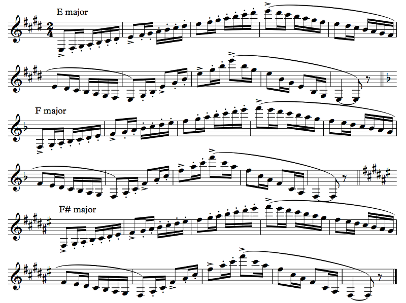Example 4.13
What's up with this pattern? And why does it sound lower than it's written? Don't think I haven't noticed.
Nothing escapes you, huh? Hopefully you already know the answer to the second question. Earlier I showed you the Florida All-State pattern for the chromatic scale; this is the pattern for the major scales. Tongue up, slur down, then arpeggios. This kind of thing is meant to demonstrate mastery on the instrument, which is why it's part of the audition process; we actually had to play all 12 of these in order (there are 12 of them). As I mentioned earlier, the clarinet is pitched in Bb, which means that the Bb major scale is essentially the easiest to play, and for historical reasons, on clarinet music it's actually written as C major, so the written C major scale is the easiest to play, and scales that share a lot of notes with the C major scale are easier than scales that don't. So F major is really easy (actually easier than C major), with simple fingerings for every note, and F# major is a pain in the ass, with lots of finger-moving from one place to another. Such is the life of a woodwind player. On piano, more sharps just means more black keys. On voice, you can't tell the difference anyway so it doesn't matter.
Why can't you tell the difference?
Tell me, what's the difference between the three different scales in Example 4.13 above? Listen to them, and tell me what changes from one to the next.
Well, nothing; everything just gets a little higher on the second scale and a little higher still on the third.
That's right. There's no difference between one scale and another in sound, except that one's higher than the other. We can make this a little more formal:
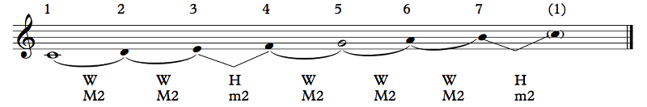Example 4.14
A major scale has the pattern WWHWWWH up from the tonic, where W represents a whole step (a major second) and H represents a half step (a minor second). The notes of the scale are known as scale degrees. In a major scale, the half steps are between scale degrees 3 and 4 and between scale degrees 7 and 1; the other steps (between 1 and 2, 2 and 3, 4 and 5, 5 and 6, 6 and 7) are whole steps. Other scales have other patterns; this pattern is specific to the major scale.
Just as a minor note (ha), scale degrees are supposed to have a hat on them (^), but I can't get that to display either in text or in Sibelius, so we'll have to do without the hats. Sorry about that.
We can use this pattern to generate major scales with other tonics. For example, let's figure out the D major scale. We start on D; that's scale degree 1. We go up a major second; that's E. We go up a major second; that's F#. We go up a minor second; that's G. We go up a major second, A. Major second, B. Major second, C#. And a minor second back to D. The D major scale, therefore, is D E F# G A B C#.
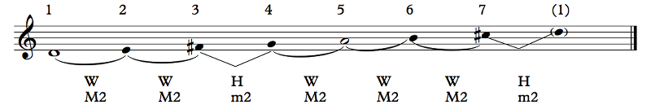Example 4.15
Oooh! Do another one! How about... A#?
Well, that one doesn't really work, so let's do Bb. Start with Bb, then—
No, fucker. A#.
Oy, if you insist... We start with A#. Up a whole step, B#. Up a whole step, Cx. Half step, D#. Whole step, E#. Whole step, Fx. Whole step, Gx. Half step, back to A#. So the scale is A# B# Cx D# E# Fx Gx.
Heh heh. Nice. That's a fucklot of sharps and double sharps. Wouldn't it be easier to just have D instead of Cx? Like, why not do A# C D D# F G A?
That's why I suggested Bb, ass. So look: the interval from A# to C is a diminished third. That won't do; it has to be a major second, and that's a B#. Or you can just play Bb major: Bb C D Eb F G A. It's much nicer. A nice key, Bb major.
Wait, key? And what difference does it make? Why is a diminished third wrong?
It has to do with scale degrees. We'll get more into that later on. Basically, each scale degree (and altered scale degree) has a different way it behaves, and the spelling of the note helps to indicate that. We generally assume that there are 7 scale degrees, and each scale degree corresponds to one letter name. If you had A# C D D# F G A, you'd have two scale degrees on A and two on D, but none on B or E. If you go from A# to C, there's an understanding that there's a B in between, but there... isn't. This can be very confusing to musicians. We will learn to understand music based on scale degrees, and if these scale degrees are wrong, things just stop making sense. From a purely performance-oriented standpoint, there's no difference between a B# and a C, but from a music-theoretical perspective, they're different entities.
The main caveat is that this only applies to tonal music, or at least music that's close enough to tonal. This means music where you're supposed to hear notes as scale degrees with respect to some tonic. In atonal music, there really is no difference between B# and C, though if you're going to write a Bb major scale, don't be a dick about it and use A# and D# when you can just write Bb and Eb.
I heard that string players will actually vary the pitch based on whether it's a G# or an Ab, though, or something like that, so they do sound different, right?
Ehhh. Not exactly. You see, on piano, when you play a note, that's the note that comes out. On continuous pitch instruments — instruments where you can vary the pitch smoothly from one note to the next, like trombone, violin, voice, etc. — you can play it a little (or a lot) higher or lower if you want. So if you wanted to, you could play G#'s higher than Ab's. But there are a bunch of caveats to this. First, as we'll see in a much later chapter, it's not clear whether you want to play your G# higher or lower at any given time. If you want a pure third in a dominant E chord, play it lower; if you want a stronger leading tone to the A, play it higher. (If this didn't make any sense to you, it hopefully will eventually, but it would take me too far afield to explain it right now.) You likely will make a difference in pitch depending on whether it's a G# or an Ab, yes, but that difference will depend on your understanding of the music to figure out what that difference is. If you see a G# that is clearly meant to be an Ab that someone wrote incorrectly, you're going to inflect the pitch like a G#. Ultimately, G# and Ab are the same sounding note; you might just end up interpreting them differently (or you might not).
At least with 12 notes per octave. If you used 19 notes per octave instead, let's say, they would be different notes. But let's not get too distracted.
Here are all of the (sensible) major scales:
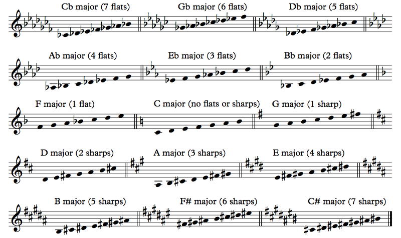Example 4.16
Where's A# major? And why are there 15? Aren't there 12 notes?
A# major is not sensible (not that it doesn't actually get used from time to time for brief segments of music; Bach's fugues in D# minor actually do go into A# major — we'll talk about minor scales soon enough). And there are 15 because... some of them overlap. The top row and the bottom row in the example above both have the same scales, but they're respelled. Cb major is enharmonic to B major, Gb major to F# major, and Db major to C# major.
I did one other thing in this diagram: I included key signatures. (I added the flats and sharps directly to the scales too, just for clarity, so you can more easily see which notes are flat or sharp.)
What do those mean?
The key signature tells you what key the music is written in. A key is... A key is...
A key is...?
...I don't know. I don't know how to explain what a key is. Sorry.
Come on, try.
OK, but be warned, it's going to be inexact. A key is the tonic and mode that a piece is in, provided that the piece is tonal and sticks to the major/minor dichotomy. Let's parse that. There are two kinds of keys, major and minor. We're talking about major keys now; we'll talk about minor keys in just a bit. There are a lot more modes than just major and minor, but those aren't keys. Why? Historical reasons. We just don't call them keys. We've already talked about what it means for a piece to be tonal: it has a tonic, a note that acts as a tonal center. So let's talk about the most important part of this definition: the "a piece is in" part. What does it mean for a piece to be "in" a particular tonic and mode?
This is not a simple answer, but I'll try. If a piece is in the key of C major, that means that the most important note, the tonic, the note that feels like "home", is C. It further means that the scale that feels like "home" is the C major scale. It doesn't mean that the piece uses only notes from C major. It can use whatever notes. Just, the notes that aren't in the scale have to feel like they're "away from home" somehow, and the notes that are in the scale have to feel like a return.
How can you tell what key a song is in?
By listening. You have to listen (or listen in your head, quietly, if you've developed your ear enough) for the tonic and for the mode.
Can't I just look at the key signature?
Key signatures LIE. They lie surprisingly often, actually. Sometimes they lie on purpose; sometimes they lie because the composer didn't know what he or she was doing. And besides, the same key signature can represent either a major or a minor key. For example, the empty key signature (no sharps or flats) is here described as C major, but it's also A minor, as we'll see shortly.
Anyway, let's see some examples, shall we? We're also going to do a bit of melodic analysis, because it's good to learn how to do that.
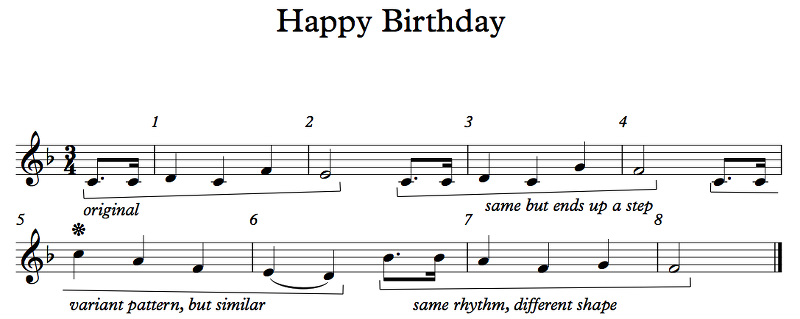Example 4.17
I know that tune! I hope you're paying the royalties.
Heh. It's out of copyright. PUBLIC DOMAIN, BITCH!
Anyway, let's take a look. A lot of people like to say that the way to identify the key of a piece of music is by the first note. If you've ever tried playing Happy Birthday starting on C like I just did, you played it and played until you got to the pickups to measure 7, where there's a Bb! What? If you were using one of those toy keyboards that only has the white keys, you were fucked! Black notes, baby! In Happy Birthday! What's going on?
The answer is... many things. Let's talk about the key first, and then we'll look at some of the other features. This simple song has four short two-bar phrases, which I bracketed for you. A phrase is just a short bit of music that works like a statement or a question. All four phrases have very similar rhythms, don't they? The first phrase feels like it ends on a question; the second phrase feels like it answers that question. The first phrase ends on F E, which is unstable (meaning that it feels unresolved); the second phrase starts exactly the same way but ends on G F, which is stable (meaning that it feels resolved). This clues us in that F is probably the tonic. If C were the tonic, C would be stable, but C is only used to set up the phrases. Here it comes again in the third phrase, and it goes up to the high C. I marked it with a symbol because it's the highest note; when studying a melody it's good to keep track of such things. The highest note is usually the point with the most emotion; usually, the music builds towards that highest point in a climax and then comes back down in a denouement. Anyway, in measure 5 we get back to the F, but we overshoot it, so we still need to resolve. We try again, but this time starting at the Bb, and come down to F in measure 7, but that's a weak beat, so we need the G F to close off the melody, the same G F that ends the second phrase.
The fact that the melody resolves on F is what makes F the tonic. (Note that the song can easily resolve on notes that aren't the tonic! They just don't feel like a complete resolution.) The key signature is the key signature of F major (check 4.16 for the table), but the key signature can lie. The resolution, not just the actual resolution but what the music intends to be the resolution, is what tells you the actual key.
Can't I just see what notes are in the song and just find the key signature that fits them?
Oh, no no, no you can't! There's no reason why you couldn't use notes from outside the key. We'll talk about modes later, as well as some tricks for using chromaticism (that's when you use things from outside the key), but the key has to depend on the resolution. Hey, even in Happy birthday, you don't even need the third and fourth phrases to tell. Just from the first four bars, you know it's F major. With the notes C D E F G, if you look at the chart it could be either C major or F major (or A minor or D minor, but we haven't gotten to those yet). But we know it's F major, not because of the Bb later on but because the melody resolves on F.
We're going to spend a lot more time finding the keys of various pieces. After this chapter, you should go back to the first three chapters and figure out what keys everything in in. Not everything is in a key, but most of the examples I used are.
Minor
Here's C minor:

Example 4.18
Compare this way back to Example 4.1, C Major. You probably think the major scale sounds... happier. There's a lot of debate about why that is. But you may hear that minor is sad. That's not true. Sure, sad things can be written in minor, but they can also be written in major, in dorian #4, in whatever. What makes it sad isn't the scale; it's many other things, like tempo, instrumentation, lyrics, melodic contour, stuff like that. The mode (in this case, minor) helps, but it's not the most important part.
The minor scale has its own pattern: WHWWHWW. You can derive the D minor scale, for example: start on D. Up a whole step: E. Up a half step: F. Whole step, G; whole step, A; half step, Bb; whole step C; whole step, back to D, so it's D E F G A Bb C. But here's the cool part: the minor scale has the same notes as the major scale a minor third up! It's crazy, isn't it? So C minor has the same notes as the major scale a minor third up, which is Eb major. And D minor has the same notes as F major! We say that F major is the relative major of D minor, and D minor is the relative minor of F major. These two scales, a relative major-minor pair, are very closely related; music can easily modulate (that means to change key) from the major to the relative minor or from the minor to the relative major, and vice-versa.
On the other hand, you'll notice that C minor, compared to C major, has lowered scale degrees 3, 6, and 7. C minor is the parallel minor of C major, and C major is the parallel major of C minor. The two scales in a parallel major-minor pair have the same tonic but different modes. It's also pretty easy to move from one mode to another on the same tonic. We'll see examples of both parallel and relative modulations at some point.
Why are they called major and minor?
It's simpler than you might think: it's the size of the third with the tonic. In C major, the third is E, which forms a major third with C. In C minor, the third is Eb, which forms a minor third with C. That's where the name comes from.
So a major scale has major intervals and a minor scale has minor intervals?
Nooooo! No no no, NO! Both scales use the same notes! They have the same intervals, just in different places. In partciular, both scales contain a note a major second up from the tonic. That's right, the minor scale contains a major second up from the tonic. Minor just means smaller and major just means bigger; you know that!
Now, the minor scale comes in three forms: natural minor, harmonic minor, and melodic minor. The natural minor is the scale we're talking about. The harmonic minor is that scale but the 7th scale degree is raised (it goes from being a b7 to being a 7). The melodic minor is kind of weird; going up, you raise the 6th and the 7th (making the scale 1 2 b3 4 5 6 7 1), and going down you lower them again (1 b7 b6 5 4 b3 2 1). Here are the three minor scales on A: A natural minor, A harmonic minor, and A melodic minor.
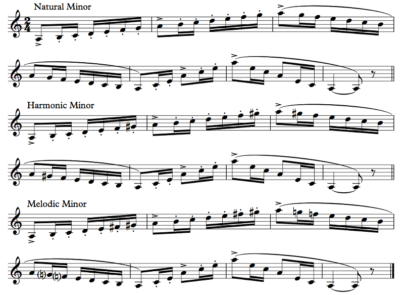Example 4.19
What instrument is that supposed to be?
English horn. It's a big oboe pitched in F (but I didn't bother transposing the sound, so it sounds as written). The English horn, naturally, is neither English nor a horn, but that's just how these things go.
The three scales sound pretty similar. What's that part after the scales all about, and why do we need three different minor scales anyway?
I'll start with the easy question first: the bit after the scales consists of arpeggios. An arpeggio is a chord played one note at a time. In particular, in a major or minor scale, we have a special chord called a tonic triad (we'll talk more about chords soon enough), which consists of the first, third, and fifth scale degrees of the scale. In a major scale, the tonic triad is called a major triad, and it consists of the 1, the 3, and the 5. In a minor scale, the tonic triad is called a minor triad, and it consists of the 1, the b3, and the 5. In A major, for example, the tonic triad consists of the notes A, C#, and E, while, in A minor, the tonic triad consists of the notes A, C natural, and E. The 6th and 7th scale degrees, the ones that change in the harmonic and melodic variants of the minor scale, aren't part of this chord, so the tonic triad arpeggio is the same for all three kinds of minor.
Minor scales were not part of the All-State audition process when I was in high school, but instrumental method books still teach them because, just like major scales, they come up. Music uses scales (and arpeggios) a lot, a lot more than you might think, and having these scales inscribed in muscle memory means that tricky passages get a lot easier since you already have them in your fingers.
Now for the hard question: why three forms? Unfortunately, we need to go deeper into music theory to properly answer this question, but I'll give it a go right now anyway. The first answer is that we don't. We can safely ignore the harmonic and melodic minor scales when talking about minor keys, and when the 6th and 7th scale degrees get altered, well, whatever, they're just chromatic alterations. As you already know, staying within the notes of the key is boring, so let's use some alternative 6th and 7th degrees for variety, right?
But that's kind of a copout. In early music, even before the Renaissance (back then there were no such things as major and minor scales, or even keys at all), people realized that the "correct" way to approach a cadence — that is, a resolution in the music — was to approach it by step from below in one of the voices, and it had to be a half step, not a whole step.
Somehow I get the feeling that calling this an oversimplification doesn't even begin to cover how much you're leaving out.
Yeh. Whatever. But this note a half step down from the tonic came to be called the leading tone, and composers felt that it was so important that they had to use it even if it wasn't part of the scale.
You're lucky that I'm not a historian of Renaissance music to tell you how wrong you must be about everything. Go on.
So, when approaching the tonic in a cadence (again, that means a resolution), composers traditionally raise the 7th degree if it's not already a half step below the tonic. So in C major, say, the B is already a half step below the C, but in C minor, which has a Bb rather than a B, it isn't. We haven't talked much about chords yet, but the dominant triad in a key consists of the fifth, seventh, and second scale degrees. In C major, the dominant triad is G B D. The dominant triad's main function is to resolve to the tonic triad, which (as we'll see later on) generally involves the B, the leading tone, resolving up to C, the tonic. This is all good, but in C minor, the 7th scale degree is a Bb, not a B. G Bb D doesn't have that leading tone! So, the prevailing common practice is to raise the Bb to B in the dominant triad. This means that the chords actually come from the harmonic minor scale. It's called harmonic because it's where the harmony comes from.
So all of the... chords in minor come from the notes in the harmonic minor scale? That makes sense.
No, no, not all of them. Just the dominant triad. Plenty of minor chords use that b7, including even the dominant triad sometimes. Actually, this "rule" (remember Chapter 0) really only applies in the so-called Common Practice Period, which ended at around the turn of the 20th century. Today, it's perfectly acceptable to have a b7 resolving up to 1 in a cadence. We even think it sounds nice.
What about melodic minor? What's the point of two forms of it?
It's the same thing. When you're going up to the tonic, you raise the 7th scale degree. The problem is that the interval between the b6 and the 7 (F and G#, in the A minor example above) is an augmented second, which was considered awkward and not smooth.
But I like the augmented second. It has a nifty exotic feel.
Yeah, so do I, but in the Common Practice Period they thought it was too exotic. So they raise the 6th as well. But remember that the 7th is only raised at a cadence, so it only matters when it's going up to the tonic to resolve (it can be a small resolution). When you're coming down from the tonic, there's no reason to keep that leading tone around, so you don't need the raised 6th either. That's why you only raise those two scale degrees going up.
If you only have to raise it going up, why does harmonic minor not have two forms?
Because, in Common Practice music, you never actually need to play it. You should think of the three forms of minor as facets of what it means to be in a minor key. The notes of the scale are the notes of natural minor; the notes of the primary chords (tonic, dominant, subdominant) come from the harmonic minor; the actual melodies come from the melodic minor scale. When this happens, you're not "in melodic minor" or anything of the sort; you're just in minor, using the chords and melodic notes of minor, which includes all three forms. If you're going to practice your scales for Common Practice music, you would practice melodic minor, not the other two, because that's where most of your melodies come from!
Now, do you have to use melodic minor this way? Can you go up with the lowered 6th and 7th? Can you go down with the raised 6th and 7th? Can you put the raised 6th in chords? Well, what does Rule 0 tell you? It tells you jack shit. No rules can tell you anything. But in Common Practice music, all of these were commonly done. The basic thing is that when the harmony is the dominant triad, you use the 7, not the b7, whether you're going up or down, and if the harmony is a different chord, you don't necessarily need to raise the 7th, or the 6th to match it, even if you're going up.
Finally, on this subject, there is music that uses the harmonic minor or the ascending melodic minor scales primarily. You mentioned that you like the augmented second in harmonic minor. So do I! I see nothing wrong with using it melodically. It's just Common Practice Period (and earlier) composers who had a problem with it. And modern jazz likes to use the ascending form of the melodic minor because jazz musicians like how it sounds. It's not part of a wider minor key; it's its own thing for them.
But for us, natural, harmonic, and melodic minor are all facets, aspects, of the minor key.
Here are all of the (natural) minor scales with their key signatures:
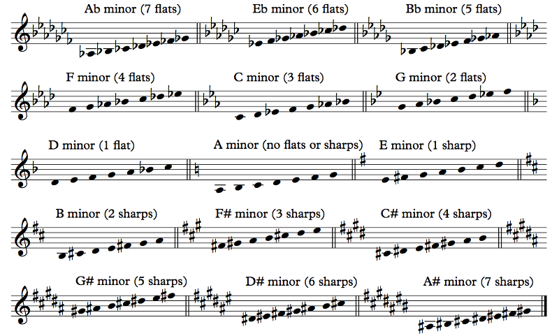Example 4.20
Note that the key signatures are the same as for major, but the tonic is different: the relative minor's tonic is the 6th scale degree of its relative major, and the relative major is the 3rd scale degree of the relative minor. For example, Db major has 5 flats. Its relative minor has as a tonic the 6th scale degree in Db major, which is Bb, so the relative minor is Bb minor. Conversely, the third scale degree of Bb minor is Db, so its relative major is Db major.
What are the key signatures for harmonic and melodic minor? Can you even write a key signature for melodic minor, since the notes change depending on whether they're going up or down?
Since harmonic and melodic minors are just aspects of the minor key, they don't get key signatures. G harmonic minor is just G minor, with its Bb and Eb in the key signature, except you put a sharp in front of the F when that comes up. You could write a special key signature that has both flats and the sharp, and some people actually do this when they're notating traditional folk music from cultures that use scales like harmonic minor (the Arabs call it maqam Nahwand, for example, though that name applies to natural minor too), but I think that this makes things harder to read by a long shot. I'm of the firm belief that key signatures should always be one of these 15. (Then again, Rule 0. Do whatever you want.) Actually, even if I weren't of this particular firm belief, Sibelius doesn't let me create custom key signatures anyway, so whatever.
In fact, let's hear (and analyze) a tune in maqam Nahwand — ahem, harmonic minor, shall we?

Example 4.21
We'll start by figuring out the key. The key signature can lie, remember. It doesn't here, but it could! So, it starts on A. Is it in A? The first phrase, ending at measure 2, also ends on an A. So is that the tonic? Hell no. The second phrase, ending at measure 4, answers the first phrase by ending resoundingly on D. Measures 1 and 3 even have an almost complete D minor scale, ending down on D, the point of stability. This piece is in D, and since it privileges the D minor scale, it's in D minor. It happens to use the C# every time instead of the C, so you could say that it's in harmonic minor. I'm pretty sure the Halabi Jews (Aleppo in Arabic/Hebrew is Halab) who composed this (or who brought it from al-Andalus, which also seems likely with this particular tune) wouldn't have made this distinction. They would just say that it's in maqam Nahwand.
By the way, what's up with the missing bar lines at the end of the first and second systems?
Eh, I just thought it looked better this way. The pickup in the next system is technically part of that measure, so the measure isn't complete yet, hence the lack of bar line. I like to format songs this way to make the parallelism obvious just by looking.
Let's talk about the form a little bit. This tune consists of a line that repeats followed by a contrasting line. This tune is often sung to a poem that is 15 lines long, so this three-line melody gets repeated a total of 5 times. One interesting to notice about the structure of this melody is that it's constantly going downwards, and when it goes up, it's only to set up another downwards trip. This is true every time except for measure 9, which goes up! The high D at measures 2 and 6 isn't really the climax of the melody. The real climax is at measure 9! Why? Because of that A Bb C# D that resolves up, and that note is held maybe longer than we'd expect, finally going up further to the E before resolving the tension down to the C# and to the A, which then proceeds just like the other two lines by resolving down to the D using the D minor scale.
Another interesting bit: A at measure 1 and the variant of A at measure 3 differ by only one note, and yet they feel pretty different, don't they? When you understand chords more, this will make more sense. At measure 1, we have A Bb A G F E D. Here, the important notes are the A's in the first beat, and the F and D in the second beat. The Bb, G, and E are what we call passing tones; the music is only going through them to make a scale, but they're not important, restful points. Technically, the Bb is a neighbor tone, not a passing tone, but whatever, same thing. In the variant at measure 3, though, we have G Bb A G F E D. On beat 2, the F and D are still the important notes, with E as a passing tone, but now, on beat 1, the G is important as well as the Bb, and it's the A that's the passing tone! By placing a different note at the start of the measure, we changed our interpretation of these three notes at the second half of the first beat! I think that's pretty cool!
Last thing I want to say for now, let's look at the relationship between the 9-10 phrase and the 1-2 phrase. In measure 1, we have a downward scale to D: Bb A G F E D. In measure 9, we have an upward scale to D: A Bb C# D. The rhythms are quite similar, aren't they? The difference is that in measure 1 you don't get to the D until the second eighth note of beat 2, while in measure 9, you get to the D right at the downbeat of beat 2. It's a fairly small difference. It helps build the tension on that note, but it's actually not an essential difference; you could imagine a measure 9 that goes A A Bb C# Bb C# D instead, and it wouldn't be much weaker or structurally different. Measure 10 differs from measure 2 in an interesting way as well: measure 2 goes from the Bb up to D then back down. It reaches up in the middle. Measure 10, on the other hand, is coming down off of the high point, the E in the pickup. They both end up at the same place, but the shape is quite different each time. If the tune used the same section B at measure 10 as it does at measure 2, the high note set up in measure 9 would just dissipate. This way, the climax (which isn't really the high E but the D before it) is satisfying. And what do we do with all that excitement in the climax? We release it by repeating the familiar at measures 11 and 12, and land gracefully down on the low D again.
Huh. You can get all of that from just a few bars of music?
Hell yeah! Isn't music theory awesome?
Your task now is to go back through the examples in Chapters 1 and 2 and try to do a similar kind of analysis that I just did here and in Example 4.17 with Happy Birthday. The rhythm examples that I wrote may not be very interesting to analyze, but you should at least figure out what key everything is in, major or minor.
What about the percussion examples?
Hardy har har. Very funny. Now let's talk about scale degrees a bit.
Scale Degrees and Tendencies
The scale degrees have these funny names:
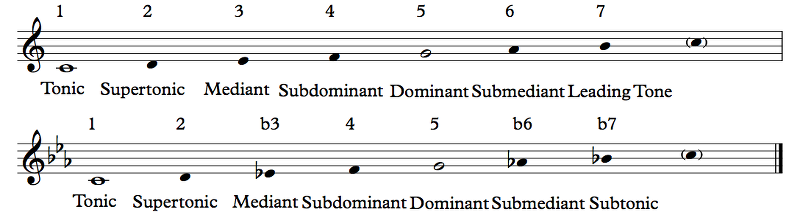Example 4.22
They're the same between major and minor, except that the 7th in minor is not a leading tone. (The 7th in major can also be called a subtonic.) These are the scale degrees, roughly in order of stability:
Scale degree 1 is the tonic. This is the center of gravity of the music; it's note that all other notes want to eventually resolve to. (The music may not actually get there, but it should feel like that's where it wants to go.) It can also be called the final, since it's the ultimate resolution of the music (though, again, modern music may well subvert this).
Scale degree 5 is the dominant. The dominant is essentially a springboard to the tonic, and it's called that (or the tenor, from tenere, "to hold") because this was the note that the chants would mostly stay around before resolving. In ancient Gregorian tradition, the dominant was not always the 5th degree of the scale, but in modern music theory, "dominant" exclusively refers to scale degree 5.
Scale degree 3 (or b3) is the mediant. In ancient chants it was a helper tone to the dominant, but with the advent of harmony it's another stable tone. We talked a little about the tonic triad; that chord consists of scale degrees 1, 3 (or b3), and 5. The same way that the tonic scale degree is the center of gravity of the melody, the tonic triad is the center of gravity of the harmony, and the third of the scale represents this chord, in a sense: the tonic is not particularly harmonic; the dominant can well refer to the dominant triad and want to resolve to the tonic; the mediant, on the other hand, is most likely to refer to the tonic triad and is very stable as a result.
There's an important concept here: when you hear a piece of tonal music — that is, music that has a tonic at all — all of the notes want to eventually resolve to the tonic, so you hear the tonic in your head even if it's not in the music. This is just a part of regular listening. As a result, you interpret every note as having a relationship with the tonic. See, at any point in the music, there are three notes going on: the tonic, the root of the chord (more about this in a later chapter), and the actual note of the melody. So, when you hear the mediant, you hear it with respect to the tonic, and the two notes together make the tonic triad (without the 5th, but that's less important).
...What?
We'll come back to this later. These will be useful concepts when we analyze music, and hopefully you'll understand when you see them in action. So let's move on.
Scale degree 6 (or b6) is the submediant. It's called that because — and this will piss you off — it's like a mediant but upside down. As in, the mediant is a third above the tonic and the submediant is a third below the tonic.
Why will this piss me off? I'm fine.
Scale degree b7 (or 7) is the subtonic. It's called that because — and this will piss you off — it's a step below the tonic.
Oh, good God. What the actual fuck, theorists? Can't you pick a definition of "sub" and stick to it? Seriously!
Told you! Anyway, there's not too much to say about the submediant. It's not particularly stable or unstable in major; in minor, the b6 is less stable. The way this works is that the centers of stability are the 1, 5, and 3 (or b3), in that order, and a note that has a strong tendency to resolve to one of those is less stable than one that doesn't. The b6 is just a half step from the 5, so it has that tendency to resolve down. The 6 doesn't have that strong a tendency.
The 7 can be called a subtonic since it's a step below the tonic, but usually by "subtonic" we mean the b7. It's also not particularly stable or unstable. In the world of Common Practice music, it doesn't really resolve up because that's the job of the 7, but in more modern music, folk music, etc., it does resolve up to the tonic. By the way, the Common Practice Period was roughly from 1650 to 1900, though it's more of a style than a real period of time. Since then, we've done several interesting things with music, but one of these interesting things is that (in some styles) we kept the concept of tonality and loosened the rules. Some people call this extended tonality, and I like to call it that too. So, in Common Practice music, the b7 doesn't resolve up to 1 without some sort of modulation (a change in tonic) to recontextualize it, but in extended tonality people love the kind of exotic sound of the b7 - 1 resolution.
Scale degree 2 is the supertonic, meaning that it's a step above the tonic. It's also not particularly stable or unstable, even though in minor it's only a half step from the stable b3. Notice that 2 - 5 is the same relationship as 5 - 1, so it also can act as sort of the dominant of the dominant, or a secondary dominant. A secondary dominant is just the dominant of a note other than the tonic (so the 3 can be the secondary dominant of the 6); we'll see these later.
Scale degree 7 is the leading tone, meaning that it leads to the tonic. It's quite unstable! It's the most unstable note in the scale... but it's stable against the dominant, since it's part of the 5 7 2 dominant triad. The leading tone is one of the reasons why the dominant triad works. You should almost always have the 7 resolve up to the 1; there are times when you may want to resolve it down, but it's unsatisfying to do so because the 7 needs the 1 so badly.
There's an interesting thing that the leading tone does: it makes the tonic unstable! In a dominant context, the 1 is actually unstable and wants to resolve down to the 7, which again wants to get to the 1. So you end up with 1 - 7 - 1. This is something we'll talk about later as well.
Anything I forgot?
The 4?
Oh, duh! Right. The 4 is the subdominant. I'll give you two guesses as to why.
Because it's a step below the dominant? Or because it's the dominant but "upside down", where it's a fifth below the tonic as opposed to above?
...I dunno? But the subdominant is somewhat special: it can be both stable and unstable. In a dominant context, it's unstable; it wants very badly to resolve down to the 3. (In minor, which has a b3 instead, it's less unstable.) But since the 1 is the secondary dominant of the 4, the 4 is often used as a kind of alternate tonic for a little while, which makes the 3 its unstable leading tone. When this happens in minor, the b3 is raised to 3 for this purpose, just like the b7 is raised to 7. The subdominant helps provide variety in the melody and harmony.
Let's look at an example, shall we?
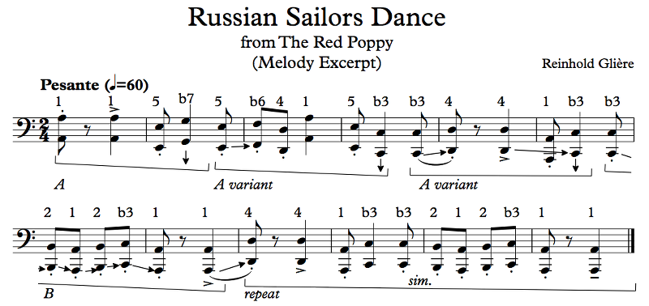Example 4.23
This is from Glière's Russian Sailors' Dance, a pretty famous piece. It starts out very slow — Pesante — and ends very fast — Prestissimo — so I highly recommend that you listen to the whole thing because it's really kickass. But before you do, try actually singing this!
What are the arrows? And the "sim."? The numbers?
The numbers are the scale degrees. They may actually help you sing. Some people who are not masters at singing yet write the scale degrees over the notes so that they can get the notes better. The arrows are my own analysis for the tendencies of the notes; you're welcome to disagree with me. The "sim." means simile, "similar", which means that I didn't feel like writing arrows for a part that repeats exactly like before. Actually, looking at this again, I already see a few things I maybe would have analyzed in a different way. So let's look at it together.
To get it out of the way, the first thing we should do is figure out the key. Given that the first 8 bars are just a scale going from A to the A below (well, not particularly smoothly), this is pretty obviously in A minor. I may have given that away with my scale degree numbers... The melodic contour here is fairly interesting, though. We start on the high note and spend the entire melody going downward. Once we get there, we repeat the second half.
Now, the note tendencies. We start at a point of stability. At the beginning of this melody, we don't know yet if we'll go up or we'll go down, but since the second note is the 5 below the 1, we get the feeling that we're going down. But where? We get a b7, which generally pulls down, and in measure 3 it gets resolved. The G resolves to F, even though there's an E first. The E also kind of resolves to F, but it really also resolves down to D. We can say that the G and the E resolve to the F and the D, respectively. But that D is in a rhythmically weak spot, the upbeat, and that's rhythmically unstable, so the composer put the 1 at the beat. In measure 4 we have E C, with the C presumably tending downard to the tonic, A. But it goes up to D first so that the resolution takes a rhythmically stable number of measures.
Whoa, stability and instability happen on so many levels!
It does! You should try to hear all of this yourself, because generally speaking the music theory is just pointless babble if you can't actually hear it in the music. Going on, at measure 7 we have a B (scale degree 2). That generally wants to resolve either up to 5 or down to 1, and here it goes to 1. But, again, that 1 happens at a rhythmically weak spot, so the music bounces back up so that the real 1 happens on the downbeat of the next measure. At the end of measure 8, the 1 acts as a secondary dominant to the 4 in order to repeat this ending phrase.
These songs really have a lot of repetition, don't they?
They have to! Repetition is how we enjoy things. We enjoy what we've seen before, but we also enjoy adventure, so one of the tricks to music is giving you something new in a familiar way or something familiar in a new way. Something new in a new way will just go right over our heads if we're not specifically prepared for it. Stravinsky's Rite of Spring was famously received like this at its première; audiences just weren't ready. If you were to put it on a program today, though, people would love it, at least if they've seen the original Fantasia!
A note about the numbers: theorists don't all use the same conventions when numbering things. I number everything relative to the major scale, so in minor I use b3, b6, and b7. Many others number relative to the scale itself, so minor uses 3, 6, and 7, and melodic minor uses #6 and #7 (or natural 6 and natural 7, depending on the key signature). I find this usage confusing. When I say b3, you don't need to wonder whether I mean a minor third above the tonic or a diminished third. This is much better for looking at music in our modern system of extended tonality, in my opinion, because the concept of mode is much more fluid. It's sometimes difficult to tell if the music is in major or minor, because it can use notes and relationships from both scales. So I just ignore the question as not meaningful and label everything according to the major scale, and none of us get confused.
I'm confused.
You'll figure it out. I'm confident in you.
The other reason I like the major style of numbering is because it can unambiguously describe chromatic alterations. Let's talk about those.
Outside the Scale
When you use an accidental to change a scale degree to a note outside the scale, you're making a chromatic alteration. In most cases you're either using a secondary leading tone or doing modal mixture.
With modal mixture, also known as borrowing, you're using a note from a different mode. So if you're in major and you use a b6 or b7, you can be said to be "borrowing from minor", since those notes are from the minor mode. The only problem with this is that it's a terrible explanation much of the time. It's much easier to think of an extended tonality, where all of these notes are simply guests of the tonic, than to have to justify the existence of every note. So let's say you use a b2. It's a great note. One of my favorites. It's not in minor, but it is in some other modes like phrygian (we'll talk about this in a later chapter too). Why do you have to come up with a reason for using the b2? Why can't you juse use it because you think it sounds nice? That's why I use it! Anyway, modal mixture is when you use notes and relationships from another mode, but it's really a limited explanation for anything and you might as well not talk about borrowing notes and just take them for yourself.
Leading tones, on the other hand, are much more clear-cut. I mentioned the 7 as "the" leading tone, but the 3 is also a leading tone to the 4, and the 4 is a leading tone to the 3. The b6 can be a leading tone to the 5. (The 2 and b3 don't really have this relationship, generally.)
Much of the time, when a chromatic note is used, it's a leading tone. So, for example, you may see a #1 as a leading tone to the 2, #2 to the 3, b5 down to the 4, #4 up to the 5, #5 up to the 6, and even #6 up to the 7. b2 is a good leading tone down to the 1 as well. You'll notice that some of these are below the note they lead to and some are above, but in all of these cases, the leading tone is unstable and the note it leads to is more stable. This is part of what I meant when I said that if the piece is "in" a scale, the notes of the scale are "home": chromatic notes resolve to the notes of the scale, not the other way around. In all these cases, the note resolves in the direction of the accidental. So if you raise a note, you resolve it further up; if you lower it, you resolve it further down.
Note the spellings. #1 resolves up to 2, while b2 resolves down to 1. They're the same note on the keyboard, but they go in different directions, and that's why spelling matters. When I see a #1 in my music, I've built my expectations for how it will resolve. Also, #4 resolves up to 5 and b5 down to 4. And, interestingly and importantly, #2 resolves up to 3 while b3 is stable.
But wait, can't a #4 resolve down to 4? Or does it have to be a b5?
A very interesting question. These tendencies are only tendencies; you're welcome to subvert them. The case of the #4 is especially interesitng. Ordinarily, a #4 has a tendency to resolve up to the 5... but you can subvert that tendency and resolve it down to 4 instead, which then resolves down to 3. Some people call this sublimation, since the leading tone energy of the #4 just kind of dissipates instead of resolving like you'd expect, but it still feels satisfying. And at other times, the #4 may resolve directly to 3, or it may go to 4 and not resolve right away. The #4 is a versatile note. In all of this stuff, context matters. The b5's only job may be to resolve down to the 4, but the #4 might be the lydian note ("borrowed" from the lydian mode; we'll get to that), or it could be part of a secondary dominant chord that resolves irregularly (we'll get to that too). It's not necessarily used as a leading tone.
This leads us (ha) into the final category of chromatic alterations, the miscellaneous category.
Miscellaneous is a bullshit category, I'm sorry to tell you.
Eh. Yeah. But this is when a chromatic note isn't really a leading tone or used as part of another mode. For example, you could have a #5 that doesn't go to 6 but instead goes to #4 or to #6. Again, it's useful to view these notes as guest notes and not try to devise elaborate origin stories. You should feel free to use whatever notes you want without having to justify them.
Let's see a crowning example of chromaticism:


Example 4.24
You should try singing it first (ignore the words).
OK, give up? I tried to transcribe this recording of Tom Jobim and Newton Mendonça performing Desafinado (the actual music starts at 1:54 or so; the first two minutes are just Tom Jobim introducing the concert). If you're ever wondering what makes people think composers are smart, it's genius like this. Holy shit.
I don't get it.
All right. "Desafinado", the name of the song, means "out of tune". The singer complains that his beloved is beautiful and has a great musical ear, but she complains when the singer sings because he sucks at it. The main part of the song is about how hurt he is, and how what his lover fails to recognize is that a bad singer still has a heart. I could give you a translation, but the song is pretty long. The Pure. Fucking. Genius of this song is that the melody is TERRIBLE! It's all over the place! It's got awkward leaps and parts that sound kinda similar but are in different keys, just like how a real singer who can't hold a pitch would sing it! The irony is that the song is actually really difficult to sing, thanks to all these "errors".
The rhythms are also really hard...
They are, but that's just bossa nova. That's why it's marked ad lib. The intro is kind of free rhythm, and the main part of the song has a nice bossa nova beat, but the actual melody isn't strict at all, and that's very often how soloists play with their solos. If you've ever heard a singer completely butcher the National Anthem, that's because they like to play with the rhythms so much that the music becomes unrecognizable. I don't think it gets to that point here. If you listen to other recordings of this song, of which there are many (including in English, but I find that poetry in Portuguese just doesn't translate), you'll hear completely different ways of doing the rhythms, and that's OK.
One thing I want to point out is the note at measure 72. The recording I transcribed doesn't have that note in the sung part (though it is in the piano), but some other recordings do. I like how it ties the phrase together.
Also, see that little curvy line under the second note, between "do" and "eu"? That's just a little symbol that says to say both syllables as one syllable, so "do" and "eu" become something like "dweu". English doesn't really have an equivalent that I can think of, but it happens in languages with lots of syllables that end in vowels.
What does it mean to transcribe?
To transcribe means to write down the music from some other source, usually a recording or a live performance. I actually highly recommend that you find music that you like and transcribe it. You learned how to read sheet music in chapters 1-3, so now that we're in chapter 4 you're ready to write some yourself. Transcription is nice because it forces you to listen closely to the music in order to write down the notes. I just transcribed the melody; for a real challenge, transcribe the harmony (presumably you'll want to do this a few chapters from now). The first step in analyzing a piece of music should generally be to transcribe the part of it you're interested in. And the first step in learning how to write in a particular genre or style is to analyze music in that genre or style.
What does the G: 5 thing mean at measure 15?
That's a modulation. From that point on (at least until the next modulation at 18), scale degree numbers treat G as the tonic rather than Eb.
So, let's analyze. First step: what key is it in? Let me just say: I got this wrong. I had to go back later and change it. I could still be wrong. I assumed a few points of modulation, but you could say modulations happen at other points too. I don't know! This song is hard, OK? I eventually settled on Eb major. It's not that clear from the notes. In fact, right now, I'll say that bars 1-8 should probably be in G minor. I'm not sure about measures 9-12, but to me it's F minor, and I actually think we're already in Eb major at this point but it's unclear. 13 and 14, I think we just don't have enough to tell. 15 is definitely G, though, because this same modulation happens in the main part of the song.
Let's look at the chromatic tones used here. We have that #4 in measure 3. That's a chromatic passing tone; it simply bridges the gap from the Bb to the Ab. On the other hand, if you think we're in G minor at this point, the Ab isn't in the key, and that's actually the chromatic passing tone to the G that never comes.
How the fuck can the tonic be a G? There's no G in sight!
Good question. It's in the harmony, which I didn't bother to transcribe (because it's much harder to transcribe than the melody, and also we haven't talked about chords yet).
The other chromatic stuff is at measures 9 and 10, but if you think of this in F minor, it makes sense: we have 5 b6 5 b6 5 b6 7 2 4 b3 b3, which goes around the actual F, but all the notes make sense, ending on a stable b3. Back in Eb major, the b3 at measure 14 is just a chromatic alteration. I don't know what key we're in or what key we're borrowing from. I think we're borrowing from Eb minor, but... eh. I don't like the idea of borrowing notes, as I mentioned. At measure 15 we have a pattern that comes back a few times: two measures in G major, followed by two in G minor that goes back to Eb (most of the time). Here's where modal mixture makes sense. We're totally borrowing the first two bars from G major! The harmonies confirm this, though, again, they're not shown here.
By the way, when we temporarily change keys, that's called a modulation. Oftentimes there'll be a chord or a note in common between the two keys, a chord or note that is interpreted one way in the first key and a different way in the second key. This chord or note is called a pivot. It's not always clear where the pivot actually is, but I tried to mark a reasonable spot for each one. We can also not actually change keys but very, very briefly treat another note as a tonic, like that #1 in measure 10. That's called a tonicization. Secondary dominants and leading tones are mostly useful to tonicize other notes.
Into the main body of the song (many recordings omit the slow intro altogether). The #5 at measure 20 is obviously a chromatic neighbor tone, a secondary leading tone to the 6. But it has a kind of special function in measure 21: it's just weird. It's more evidence that the singer is... not particularly well-endowed with musicality (we're obviously not talking about Tom Jobim here, one of the greatest musical geniuses of the 20th century, just the character of the narrator). The #6 at measure 24 is, again, just a leading tone to the 7. The b7 at 25 looks like it would also just be there to be weird, but it's actually the leading tone to the 6 from above, because we're tonicizing F minor now. In F, that b7 is actually a b6, and it goes down to the C two bars later. Since it's just a tonicization and not a full-fledged modulation, I didn't bother leaving Eb major, so moving on. We get to a kind of really weird tonicization/modulationg thingy at 28, where we all of a sudden find ourselves in C. The D# here is a chromatic passing tone between the D and E; it's a leading tone to the E. The #1 at 29 is just weird. The b5 at 31 is a leading tone to the 4. Now we're back in Eb, and that Cb is... weird! But as the b6 it also leads down to the 5 at 35, so that makes sense.
Here in this next section starting at 35, we have similar material to the first section, except that 40 has a C instead of a Bb. What's the function of that 6? To make the singer sound incompetent, of course! But it's the high point of the section, and we go down from there in perfectly normal, tonal material in 42-44. But we lost the key. Now we're in G, just like the end of the intro.
But this is a real modulation: we stay in G. I didn't bother changing the key signature (which is part of why key signatures LIE), but the next two phrases are in G major, from 49 to 56. But then we're back to Eb in the same way the other small G sections went back to Eb, by taking a D - E figure and repeating it with D - Eb isntead. Then we're in perfectly tonal Eb bossa nova for the rest of the section until 64.
At 65, we have a reprise of the beginning of the melody, but when we go up to the high note at 71, it's now chromatically descending notes. This is the true melodic climax of the piece, and you can see how slowly we get back down. The b6 and #4 are just chromatic passing tones, and otherwise we're in perfectly tonal Eb major (other than the #6 leading tone at 82) until the end of the piece. (There's a little outro in the recording I linked, but eh.)
What's that low F with an X notehead?
Listen to the recording. It's more spoken than sung. Tom Jobim just kind of stops the air for that note. It can be annoying if you do this all the time, but as a small stylistic effect it's nice. Even though it is a low F, I decided not to consider it part of the melody, especially since other recordings don't use it.
Anyway, let's move on.
This was a really hard piece to analyze, though. Much harder than Happy Birthday. Why are you making me do this?
My philosophy with music theory is that it's pointless to talk about it without looking at it in action in real music. And real music is messy. It's adult. It's complex. Real music wasn't invented for you to analyze it cleanly. These pieces (generally) have artistic merit, by which I mean that the composer wrote these pieces not to demonstrate some concept (like I did with the rhythm examples a few chapters back) but to delight or otherwise emotionally affect audiences. I'm not saying you have to enjoy the music I happen to like. I think you would enjoy it if you gave it a chance, sure, but I'm not trying to convert you away from whatever it is you prefer. Instead, I want you to be able to see music theory in the wild.
This is also why the book is so disorganized. Real music doesn't cover just one small topic at a time. Back in chapters 1 and 2 I was continually pointing out notation issues that were covered in chapter 3. That's because they came up! We don't learn one subject at a time. That's never what we do. We learn everything at once, and we have to learn everything at once because to understand music we have to use everything together. Real music has everything at once. My hope is that you'll actually learn about music here, not just about the single aspect of music that the chapter happens to be about.
Speaking of which...
Key Signatures
Here are all of the standard key signatures, in the four principal clefs:
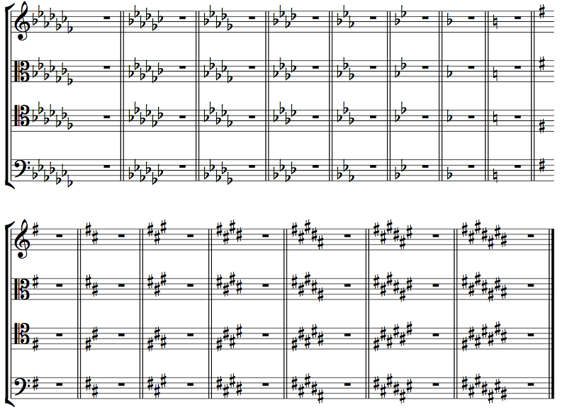Example 4.25
This is the standard way to draw them. Notice, for exmaple, that the Bb in bass clef is on the second line, not the space above the staff. If you use a music notation program like I do, you don't have to worry too much about getting this right, but it's good to know. (Every clef has everything look the same, except tenor clef. I don't really care, though, because, honestly, who wants to read tenor clef anyway?)
What matters a lot more is that the flats and sharps always come in order. The flats are Bb, Eb, Ab, Db, Gb, Cb, Fb; the sharps are F#, C#, G#, D#, A#, E#, B#. It's the reverse order of the flats! You may notice, for example, that Bb to Eb is a P4 up (or P5 down), Eb to Ab is a P4, etc., while F# to C# is a P5 up (or P4 down), and so is C# to G#, etc. They go in fourths or fifths, depending on which direction you're looking in. This is actually important, because it's important to know which notes are flat or sharp in the key signature. In fact, it's important to know that without actually looking at the key signature much. When you see three sharps, you shouldn't need to stare at the key signature for several seconds to figure out that you have F#, C#, and G#. You should just know that simply from seeing three sharps, since they're always in the same place anyway. Read enough music, and with practice this will be second nature to you.
Why does the C major/A minor key signature always have a B natural?
Oh, that. Heh. It doesn't! It's just that, when you do a key change into the empty key, you have to put naturals there, otherwise you won't know that there's a new key at all. You'll just think the measure is in the original key. These happen to be B naturals simply because the previous key signature was Bb. If there had been 6 sharps in the previous key signature instead, there'd be 6 naturals — none of which would be B!
Huh. And why did you make the one-flat key signature always go behind the natural key signature anyway?
Well, it's in order of increasing sharps/decreasing flats. We start with 7 flats and end up with 7 sharps, subtracting a flat or adding a sharp each time. If you think of a flat as –1 sharp, they go in order.
Can you make a key signature for, say A# major? How many sharps would it have?
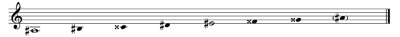Example 4.26
I can't actually make a key signature. But the scale is A# B# Cx D# E# Fx Gx. Fx, Cx, Gx, D#, A#, E#, B#. That's 3 double sharps and 4 sharps, for a total of 10 sharps if you count each double sharp as two sharps. And it makes sense, right? I mean, you'd have F#, C#, G#, D#, A#, E#, B#, (F#)#, (C#)#, (G#)#. You just keep moving up the circle of fifths.
...Circle of fifths?
Oh shit. I guess we gotta talk about that now, don't we?
The Circle of Fifths
The circle of fifths, also known as the cycle of fifths or circle/cycle of fourths, is nothing more than the notes of the chromatic scale arranged by perfect fifths (or fourths if you go in the other direction). Looks like this playable diagram:
The actual circle of fifths is in the light gray ring. In the outer ring I list the key signature for the major key on that tonic, and in the inner dark gray ring I list the relative minor (the small 'm' means "minor"). Should be self-explanatory, really. You can click on the light gray or dark gray keys to play notes, or use the top row of your qwertyuiop[] keyboard.
OK. ...OK. ...Whoa. Whoa. These notes. I can't tell what octave they're in. This is freaky!
Yeah, what octave should they be in? I don't think it matters. So I made them Shepard tones. This is a really cool idea that I saw at the Museum of Science in Ft. Lauderdale as a kid. The way it works is that each note is played in a whole bunch of octaves at the same time, but the lower and upper octaves are very soft while the middle octaves are normal. As the notes go up the scale, the lower octaves fade in and the upper octaves fade out, so you're never quite sure what the lowest or highest pitch is. This means that if you just play these notes up the scale, you can keep going up and up and up and up indefinitely while never actually getting any higher, kind of like how the stripe on a barber pole keeps moving to the side but it never actually leaves the pole. And if you play notes a tritone apart (on diametrically opposite sides of the circle of fifths) you may run into the tritone paradox, which is insane.
Try playing some tunes on the Circle of Fifths Keyboard. It's a little weird since the notes that should be close to each other aren't (though wait until you play with the Tonnetz later on), but notice how you can kind of will the notes to go up or down depending on the tune.
So why is this circle useful?
Eh. It's not that useful. People think that it's some sort of magic that they can't figure out, but there's no magic. It's just a way of organizing the notes. The most important aspect of the circle of fifths is that the next note clockwise from any note is its dominant. So, for an A tonic, the dominant is the next note over, E. The next most important aspect of the circle of fifths is the thing I marked in the outer ring: two keys a fifth apart share six out of seven notes. In fact, all seven notes of any given diatonic scale are next to each other. The C major scale, for instance, contains F, C, G, D, A, E, and B. (This is also the order of sharps; go widdershins and you have the order of flats.)
Widdershins?
Counterclockwise. By the way, the circle of fifths continues in both directions. Past C#, for example, you have G#, D#, A#, E#, B#, Fx, Cx, Gx, Dx, Ax, Ex, Bx, etc. (there's no standard symbol for triple-sharps, so let's just say it's impractical to keep going). In the other direction, past Cb, we have Fb, Bbb, Ebb, Abb, Dbb, Gbb, Cbb, Fbb, etc. (triple-flats are more obvious — Bbbb, Ebbb, etc. — but they're still impractical). The reason why those aren't generally shown in these circles is because they don't have standard key signatures.
There's also a little trick for remembering the key signatures. For sharp major keys, the tonic is the note after the last sharp. For example, the last sharp in the G major key signature is F#; G is the note after. In the key signature with 4 sharps, the last sharp is D#, so the tonic is E. Of course, this only works if you know the order of sharps. For the flats, the last flat is the next note in the circle of fourths (also known as the circle of fiffhs going widdershins). The last flat in F major is Bb, which is the next note over. In the key signature with 4 flats, the last flat is Db, so the key signature must belong to the previous note on the circle, Ab major. Some people rely on tricks like these. I think it's better to just learn the key signatures, but hey, if it helps, whatever.
Another useful pattern: C to F is a perfect fourth up, right? Well, it's also a perfect fifth down. This means that any relationships going clockwise are the same as relationships going counterclockwise, just upside down. In particular, E is a major third above C and has four sharps, so Ab is a major third below C and her four flats.
It's important to realize that in our 12-tone equal-tempered system, the circle is an actual circle; when we go around, we wind up back where we started after 12 fifths (or fourths if we go the other way) if you consider enharmonics like Gb and F# to be the same note. This is, to put it mildly, magic. It took centuries to get to this point. This may sound a bit weird, but you know how we have 12 equal semitones in the chromatic scale? That wasn't always the case! In fact, people liked that it wasn't the case, because some music sounded better that way (and other music, unfortunately, sounded worse). Our perfect fifth is always the same size no matter where it happens in the scale. C to G is the same interval as Ab to Eb. Later on, we'll learn about systems where C to G sounded nice — nicer than today, actually — but Ab to Eb sounded horrible, which meant that you essentially couldn't write music in the key of Ab. This kind of thing is part of microtonal music, which (generally speaking) is music that uses the notes in between the notes of the keyboard (people disagree on the definition of "microtonal", though). We'll talk about that later. Not that much later, actually, but later. It's a bit freaky, but it's also a bit not that freaky.
Let's take a closer look at the key signatures here. As we go clockwise from C, we add sharps; as we go widdershins, we add flats. It makes sense to think of a flat as –1 sharp (or a sharp as –1 flat), so we just consistenly have this rule about adding sharps or flats when you move in this circle. The five keys surrounding any given key are the most closely related keys; in 18th century music it's rare for music to modulate to a key other than those closely related keys (and then Beethoven came and that was that). For example, the closely related keys to C are G, F, Am, Em, and Dm. This is because neighboring keys share six out of seven notes. Keys that share fewer notes are said to be distantly related instead of closely related; the most distant key to any key is the one opposite it on the circle — for example, Gb and F# are the farthest keys from C. The exception to this rule is the relationship between a major key and its parallel minor, so, for example, C and Cm. They're closely related too.
Why C and Cm instead of CM and Cm? Do you not need to notate major keys like that?
No. We can generally assume that a key is major unless told otherwise. There's actually another convention here used by theorists in more academic circles: a lowercase note name means a minor key. So instead of saying Dm I could say d. I'm not that much of an academic so I prefer the popular notation of Dm. By the way, major and minor keys in German are dur and moll, respectively, meaning "hard" and "soft". Many pieces of music are labeled by key, and many famous composers spoke German, so this is important to know. There are actually reasons for why major and minor are associated with hard and soft. Without going into too much detail (because I don't know it that well), the first note outside the seven white notes to be invented was the Bb. There were no accidentals then. There were just the two B's. The lower one became known as the rounded B, and the higher one became known as the square B. In German-speaking places, the square-ish B looked kind of like an H, which is why in German, B refers to what we call Bb and H refers to what we call B. Generally, though, the rounded B evolved into the flat sign (called a "bemol", "soft B"), and the square B evolved into the natural sign (called a "bequadro", "square B"). The sharp came from the next note to be invented, the F#. The early music stuff is pretty fascinating, but I'm not an expert, so you should try to find other sources of information on it if you're interested.
Are there other circles besides the circle of fifths?
Sure. The simplest circle is just the circle of semitones, which goes C, C#/Db, D, D#/Eb, etc. That's not very interesting. The circle of fifths shows key relationships and other stuff, but the circle of semitones... doesn't. That's actually the only other circle that's possible in 12-tone equal temperament, since the only positive integers less than and relatively prime to 12 are 1, 5, 7, and 11. If you go by 1 semitone in one direction, that's the same as going by 11 semitones in the other direction, and 5 and 7 semitones correspond to fourths and fifths, respectively. But there is one more: the circle of thirds. This one goes through all 24 keys, so it's a circle of keys rather than of notes. You can experience it by simply going in a kind of zig-zag pattern through the circle I gave you above: C, Em, G, Bm, D, F#m, A, C#m, E, G#m, B, D#m/Ebm, F#/Gb, Bbm, Db, Fm, Ab, Cm, Eb, Gm, Bb, Dm, F, Am, back to C.
What's the point of that?
I dunno. For fun, I guess. Try to come up with your own patterns? I think we're ready to move on, don't you?
Summary
There was a lot of stuff in this chapter. What are the highlights?
You should understand intervals in major scales and be able to name any interval. You should understand the patterns for both major and minor scales, and you should also know all the key signatures.
Wait, wait. You want me to memorize all the key signatures?
Uh, yep. All of 'em. Major and minor. The reason why is simple: those key signatures actually come up, and in order to play in them, you need to know what's in them without having to look every single measure. Indeed, if you see five sharps, you should already know that you're in B major (or G# minor) and you should know what those sharps are (F#, C#, G#, D#, A#) without actually having to look.
You should also understand how scale degrees work and how to label them, both diatonic and chromatic. And you should have some notion about how those scale degrees tend to behave in music. This is the kind of thing that comes from listening carefully and analyzing, so your "homework", if you will, is to find other melodies (ideally ones in a genre you like) and analyze them. How do they reuse rhythmic elements? What do the melodic contours look like? Where does each scale degree tend to go? You may find that different genres have different conventions for this sort of thing. For example, in classical music, scale degree 7 is very unstable, but in jazz, it's actually stable.
That's a little open-ended, I think.
Yeah. Remember Rule 0? There's actually a corollary to Rule 0, which is that there is no particular way in which you're supposed to hear/analyze something. If you have a good argument for why that 4 doesn't tend towards that 3, then so be it, that's how you hear it! So because of this, music theory is always going to be open-ended. If you're not a music theory beginner, you've probably learned about chords and harmonic (Roman numeral) analysis. In fact, you may have started with that. I'm deliberately not doing that and starting with melodic analysis, because I think harmonic analysis teaches the wrong lessons. In harmonic analysis, you figure out what function each chord has, and you think you're done. Look, you did some music theory! But what a music-theoretical analysis is actually about is understanding how a piece of music works, not merely slapping labels on things. Musical analysis is always open-ended. What you learn from a piece of music is up to you. You can pay attention to whatever you're interested in. For example, one common problem composers have is that their melodies are too short or too final, so how do you fix that? Go find music and see how other composers handle their melodic material. After this chapter, you have the tools to analyze music, real music, for yourself.
Now, join me in the next chapter, where we'll sink deeper into the intervals we've learned about in this chapter while developing some practical skills.
Up: Table of ContentsPrevious: Chapter 3: Notation
Next: Chapter 5: Ear Training